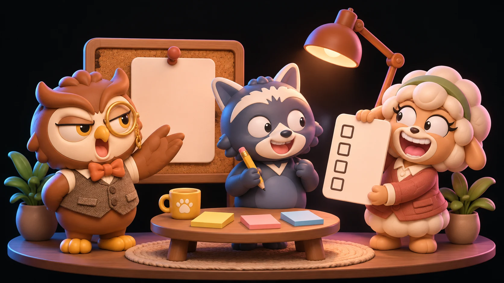
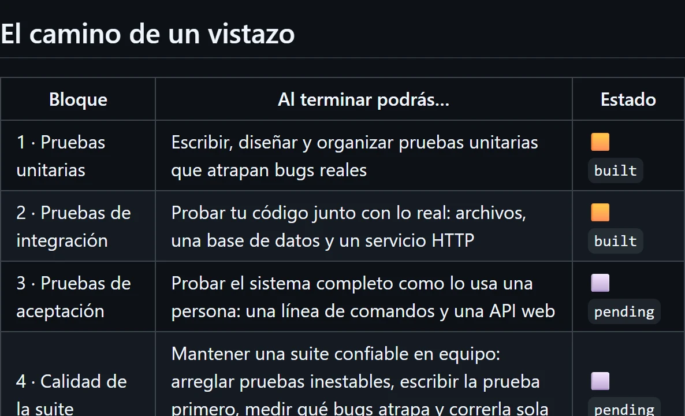
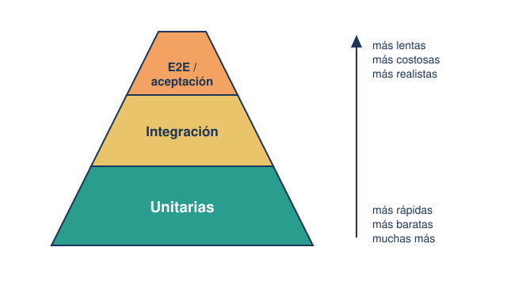
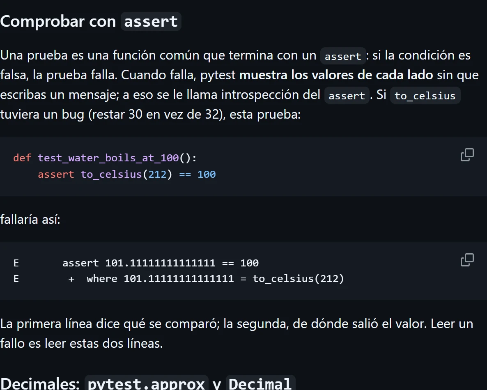
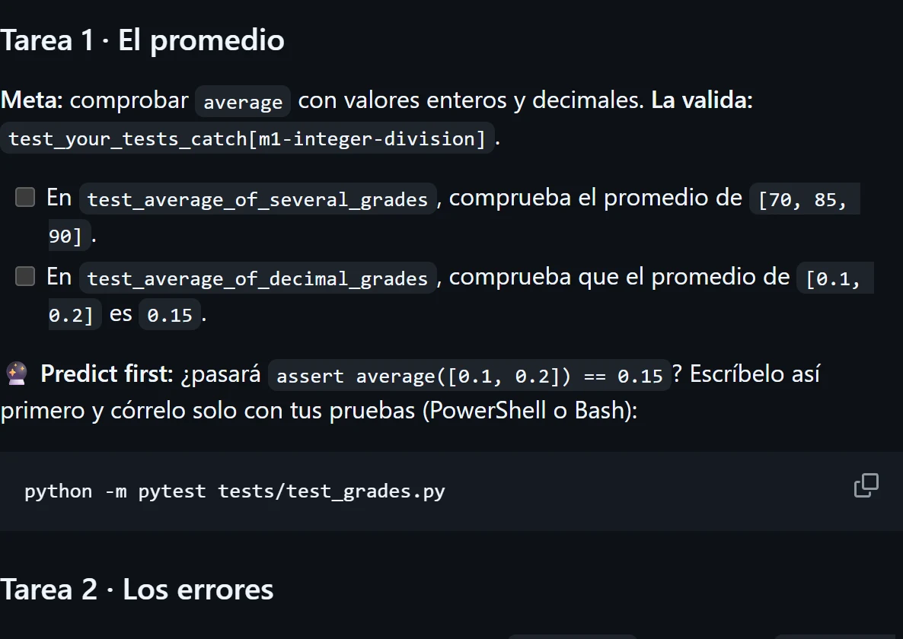
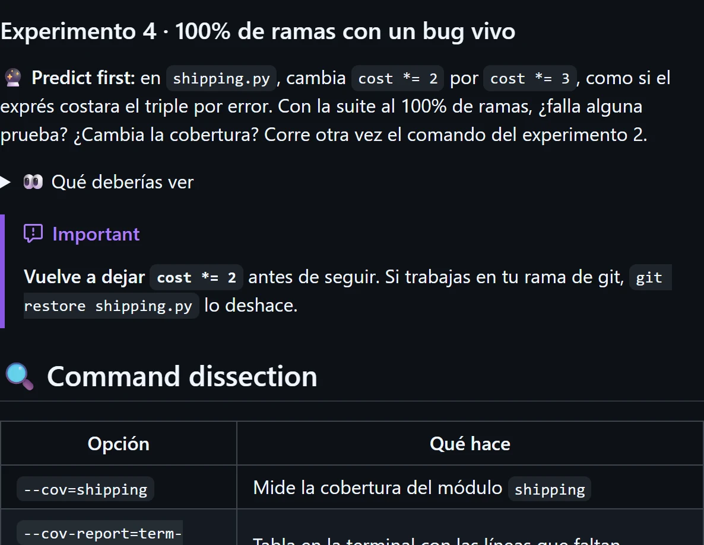
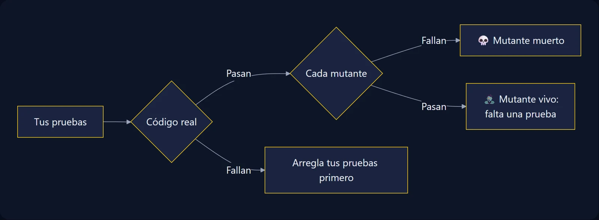
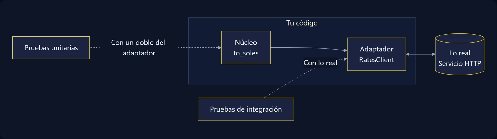
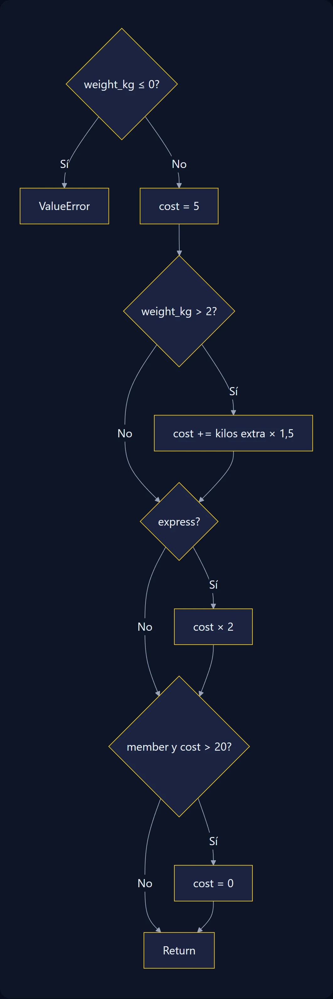

🔥 StudyForge
De «quiero aprender X» a labs que corres, rompes y verificas, con cualquier agente de IA. Hoy elegimos el próximo laboratorio y lo empezamos en vivo.
Viernes 20 nov · 18:00 Lima
github.com/Chamba-Lab/studyforge

De «quiero aprender X» a labs que corres, rompes y verificas, con cualquier agente de IA. Hoy elegimos el próximo laboratorio y lo empezamos en vivo.
Qué es y qué te ahorra.
18:02El sílabo, las guías, los diagramas y el código.
18:17Las propuestas del hilo y la decisión.
18:27Sílabo, repositorio y primer lab del bloque 1.
18:33💬 Deja tus preguntas en el chat: las respondemos al final.
Le pides a la IA «hazme un curso de X» y luego iteras: que explique mejor, que no regale la respuesta, que el código corra, que las versiones existan, que no instale cualquier cosa…
Todo eso ya viene decidido. Es lo que aprendimos en varias generaciones de labs (Quarkus, Kafka, MongoDB, contenedores…), escrito como reglas que el agente sigue.
AGENTS.md.studyforge.toml: cualquier sesión, o cualquier agente, sigue desde ahí.De tu nivel de hoy a tu meta · se planifica entero
Uno por foco que puedas nombrar · «pruebas unitarias», luego «de integración»
3–7 por bloque, de 1–2 h · primero la idea, después la herramienta
Cierra cada bloque · usa solo lo que el bloque enseñó
🎯 core · 🔬 deep-dive · 🔀 alternative · ➕ elective · 🆕 modern
Cada idea se enseña en un solo lab; los demás la usan y enlazan.
Versiones actuales, prerrequisitos en orden, nada de jerga antes de tiempo.
Un tema, tu nivel y tu tiempo.
syllabusAcuerdas el plan con el agente.
initCrea el repo: guía, reglas y verificador.
build«Siguiente lab»: construido, verificado y commiteado.
Lo resuelve y cuenta cómo le fue.
feedback mejora ese lab, los demás, el plan y la propia StudyForge.
review audita un bloque o lo actualiza a la última versión.
Un punto de partida con pruebas que fallan, y su solución.
Una demo terminada para activar, romper y observar.
Sin código: explicación a fondo y autoevaluación.
El consolidador que cierra cada bloque.
BRIEF (el enunciado) · acceptance/ (pruebas de caja negra: tu versión cumple o no) · reference/ (una solución mantenida) · REVIEW (una revisión guiada: decisiones, trampas y «rómpelo tú»). Lo construyes y comparas, o solo lo revisas.
Cada concepto va problema → idea → ejemplo → nombre, en un caso distinto al de la tarea.
Antes de correr algo, te pide adivinar qué pasará. Y nada de lo que lees antes regala la respuesta.
Los errores típicos, provocados y explicados con la salida real.
Los términos en inglés, explicados la primera vez, y un glosario que apunta al lab dueño.
Cinco preguntas de entrevista al final de cada lab.
Al cerrar un bloque, un revisor sin el contexto del autor lo lee como estudiante.
verify.py.pip-audit) en cada cambio y cada semana.De la 0.1.0 a la 1.4.2, cada una nacida de construir pytest-lab.
Notas por versión: qué copiar, qué revisar y cuándo reconstruir. pytest-lab ya va en la 1.4.2.
Que lo resuelvan personas. Su feedback cierra el ciclo.

El sílabo en GitHub: los cuatro bloques planificados, dos construidos.


assert.to_celsius, para que la tarea siga siendo tuya.assert.Lab 1.2 · Primeras pruebas con pytest

Reto 1.2: cada tarea dice qué prueba la valida y te pide predecir.

Exploración 1.6: 100% de cobertura de ramas… con un bug vivo.

1.1 · La caza de mutantes

2.1 · Qué cambia al integrar

1.6 · Las ramas de la cobertura
Un mutante es una copia del código con un bug sembrado. El único verde del inicio es el guardián: tus pruebas pasan con el código real.
Verificado en Python 3.12 y 3.15. El CI de StudyForge corre su verificador sobre pytest-lab: un cambio que lo rompa no sale.
Consultas, joins y agregaciones, respondiendo preguntas de un negocio.
Ramas, pull requests, conflictos y deshacer errores sin miedo.
Endpoints, validación y pruebas: la continuación de pytest-lab.
Imágenes, Dockerfile y compose, hasta contenerizar una app con su base.
Atacar y arreglar una app vulnerable en tu máquina: inyección SQL, XSS, autenticación.
Si un tema juntó más apoyo que algún candidato, entra aquí.
🧵 Lo que dijeron en el hilo «Temas para el próximo laboratorio» de 💬general
Y ahora mismo empezamos su bloque 1, en vivo.
syllabus · 10 minPegamos el pedido con las respuestas ya listas. El agente investiga, propone el camino completo y lo afinamos juntos.
init · 4 minCrea el repositorio: reglas, configuración, preparación y verificador. Primer commit.
build · lo que quedeEmpieza el primer reto de ataque. Lo que no termine hoy sigue en el Code & Coffee.
Nada se publica hoy: el repositorio se revisa antes de subirlo a la organización.
Cada reto trae una app pequeña con una falla. La prueba-ataque está en rojo: el ataque funciona.
La prueba-ataque pasa a verde: el ataque queda bloqueado. Las pruebas funcionales siguen en verde: arreglar no es borrar la función.
Es la caza de mutantes al revés: ahí tus pruebas atrapaban bugs, aquí tu código tiene que resistir ataques.
Es el proyecto del bloque 1: endurecer una app hasta que ningún ataque de la suite funcione.
Se ataca solo la app del propio lab, nunca sistemas de terceros. Sin Docker para empezar.
Resuelve el lab 1.1 de pytest-lab (45 min, sin código) y abre un issue «Feedback de lab». Tu feedback lo pasa de 🟨 a ✅.
Ven al Code & Coffee donde seguimos el bloque 1, y sé de las primeras personas en resolverlo.
Instala StudyForge, arma el laboratorio de algo que quieras aprender y cuéntalo en 🛠proyectos-comunidad.
Issues «Lesson or improvement» y notas para más stacks: Node, notebooks, contenedores, Java.
Connect. Inspire. Grow.